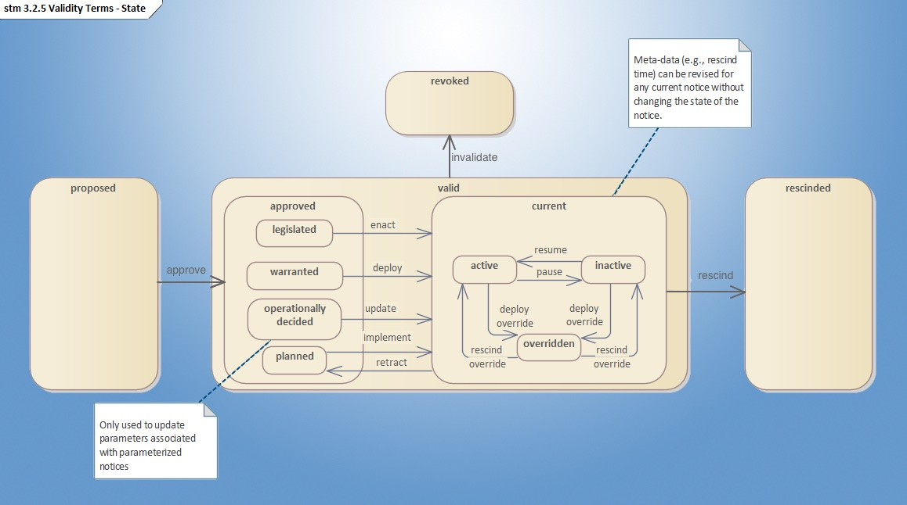

METR
METR - Workshop 3
Electronic Regulation Lifecycle
Questions for METR Workshop 3: Electronic Regulation Lifecycle
The third METR workshop will include focus on the following questions using the following state diagram for initial discussion purposes:

- What are the states in the rule lifecycle?
- How might rules transfer among these states?
- What differences might exist for different types of rules, for example, rules that are:
- Directly enacted by legislation
- Statically implemented based on engineering judgement
- Dynamically implemented based on engineering judgement
- Part of large response plans (e.g., evacuation plans)
- What are the responsibilities for each METR subsystem?
- What characteristics need to be conveyed for each rule? (e.g., location, schedule, vehicle classes affected, etc)
- Should METR indicate when condition-based rules are active?
- Should evacuation plans be distributed in advance for later activation?
Website Content: CC BY 4.0


- Website Design: HTML5 UP
- Terminology: See glossary